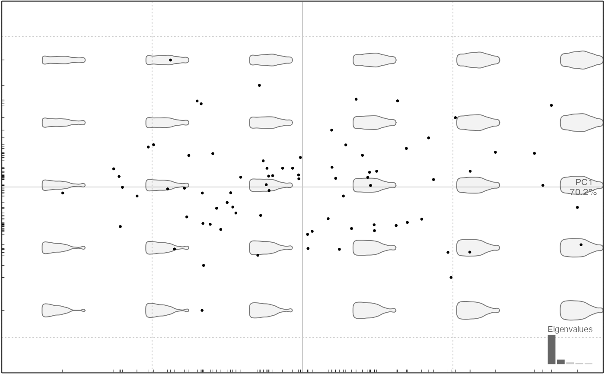

This methods applies column-wise on the coe of any
Coe object but relies on a function that can be used on any matrix. It
simply uses rnorm with the mean and sd calculated for every column (or row).
For a Coe object, on every colum, randomly generates coefficients values
centered on the mean of the column, and with a sd equals to it standard deviates
multiplied by rate.
breed(x, ...) # S3 method for default breed(x, fac, margin = 2, size, rate = 1, ...) # S3 method for Coe breed(x, fac, size, rate = 1, ...)
| x | the object to permute |
|---|---|
| ... | useless here |
| fac | a column, a formula or a column id from |
| margin | numeric whether 1 or 2 (rows or columns) |
| size | numeric the required size for the final object, same size by default |
| rate | numeric the number of sd for rnorm, 1 by default. |
Other farming: perm
m <- matrix(1:12, nrow=3) breed(m, margin=2, size=4)#> [,1] [,2] [,3] [,4] #> [1,] 2.670620 4.597120 8.401255 9.157338 #> [2,] 1.150985 5.719108 9.356390 10.720259 #> [3,] 3.066805 4.819941 8.019227 9.469230 #> [4,] 1.992539 6.046191 7.530582 13.546154breed(m, margin=1, size=10)#> [,1] [,2] [,3] #> [1,] 1.30970018 1.769321 -1.5597512 #> [2,] -0.01744358 6.486750 0.5512378 #> [3,] 7.13301779 9.320377 7.0219317 #> [4,] 8.52622563 4.558342 10.8915399 #> [5,] 2.01645375 7.194958 8.0983293 #> [6,] 3.54852287 6.733022 14.7962926 #> [7,] 4.57290872 6.963033 4.4282392 #> [8,] 10.02364430 6.407625 10.4446975 #> [9,] 2.40882230 3.826442 11.5882377 #> [10,] 10.19002487 4.197451 3.2041191#>bot.m <- breed(bot.f, size=80) bot.m %>% PCA %>% plot# breed fac wise bot.f %>% breed(~type, size=50) %>% PCA %>% plot(~type)#> Error in .::dplyr: unused argument (as_data_frame)